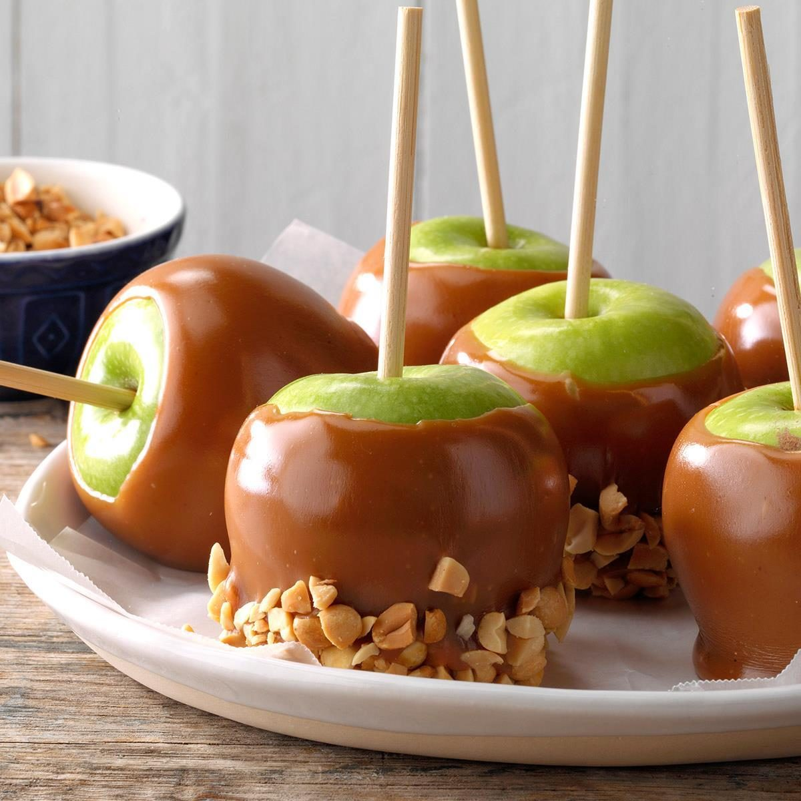

← Back to
home
Salted Caramel Apples

Description
From carnivals to fairs, the candy-covered apple is one of those quintessential festival treats and, along with
candy corn, a Halloween staple.
You can easily make your own caramel from scratch, using just a handful of ingredients: Take a crisp apple and swirl
it with a coating of rich caramel
Ingridients
- 1 cup of sugar
- 1 tsp sea salt
- 4 large apples
- 1/2 cup of water
- 1/2 cup of heavy cream
- 1/4 cup of salted butter
Steps
- Core the apples and cut them into wedges
- In a saucepan, combine the sugar and water over medium heat, stirring until the sugar is dissolved. Continue to
cook, wihtout stirring, until the mixture turns a golden caramel color
- Remove the saucepan from the heat and carefully stir in the heavy cream, salted butter, and sea salt. The
mixture will bubble up, so be cautious
- Return the saucepan to low heat and cook, stirring constantly, until the caramel is smooth and all the
ingredients are fully incorporated
- Allow the caramel to cool slightly, then drizzle it over the apple wedges or serve it as a dipping sauce